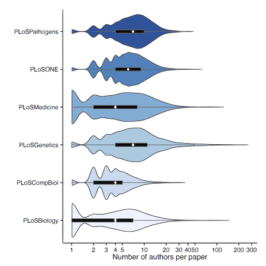
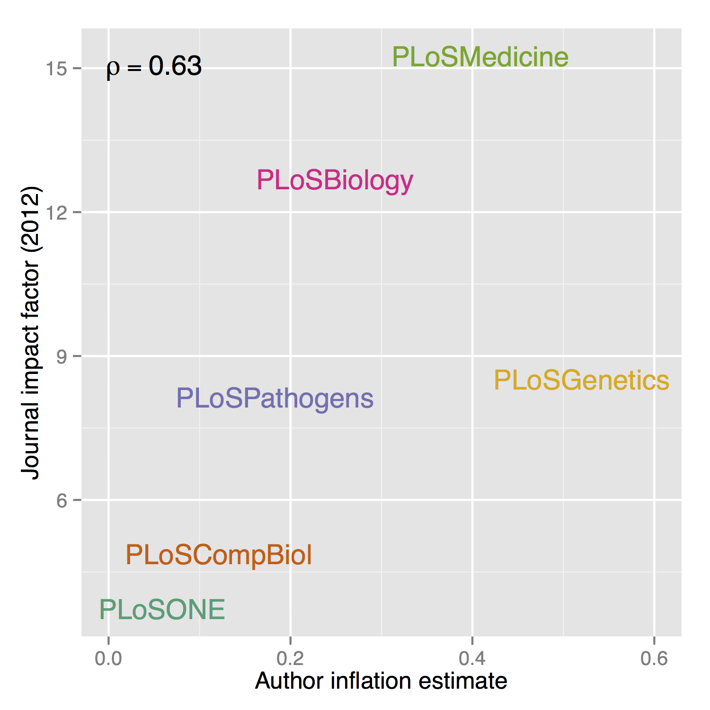

I'm going to talk about...
A couple of examples of R analyses I've done for fun:
1. Author inflation
2. Overrated films
But also:
Creating interactive plots from R with rCharts
HTML5/CSS3/JS presentations from RMarkdown with Slidify
blogR
Pop data analysis and R for the web
Ben Moore (@benjaminlmoore)
Edinburgh Psychology R-users, November 13th 2014
Slides online at: blm.io/talks/blogr
A couple of examples of R analyses I've done for fun:
1. Author inflation
2. Overrated films
But also:
Creating interactive plots from R with rCharts
HTML5/CSS3/JS presentations from RMarkdown with Slidify
Example 1: Author inflation

Found this question on academia stackexchange, lots of votes and discussion. Talks about the idea of a "golden age" of scientific publishing, where single authors dominated. Nice image.
So this was a good starting point for some analysis. Interesting question, one that I'd actually be interested in answering. The other answers were just speculation or anecdotal. OWith a couple of very specific examples. Best of all:: very easy to test!
ROpenSci community of package builders looking to open up science. Provide lots of handy APIs, in this case the one I was used is for PLOS journals. (rplos)
searchplos(
# Query: publication date in 2012
q = 'publication_date:[2012-01-01T00:00:00Z TO 2012-12-31T23:59:59Z]',
# Fields to return: id (doi) and author list
fl = "id,author",
# Filter: only actual articles in journal PLOS ONE
fq = list("doc_type:full",
"cross_published_journal_key:PLoSONE"),
# 500 results (max 1000 per query)
start=0, limit=500, sleep=6)

Bean plots showing author densities over entire PLOS collection. With overlaid boxplots showing summary stats for comparison.
This is an old plot: Should really be ordered by (e.g.) median, never order alphabetically.
We can see plos comp biol appears to have the lowest number of authors while Genetics potentially has the most. Also one extreme outlier:

Was this BRCA1 paper with 270 authors.
Nothing on the 3,000 author ATLAS paper but still quite a few.

Back to the original question: are author lists getting longer? Yes, even in this short timescale of 7 years you can see good evidence for author inflation, with journals like PLOS Genetics adding around half an extra author per year, on averge.

TODO
expand to entire NLM Medline / Pubmed records (>22 mill)
Try to get at "good inflation vs. bad inflation"
Also interesting to try an "understand" these results a little, so here I'm comparing the extimate of author inflation with the journals "Impact Factor", and there seems to be an OK correlation (can't claim statistical significance with these 6 points).
I would like to return to this at some point with the whole of pubmed, 22 million records dating from 1809 so maybe we can see this single author period transitioning to larger collaborations of today.
Good to get at Good V Bad, maybe via acknolwedgments?
Example 2: Overrated movies
Second example totally different: pop culture
Everyone relates to concept of "over/underrated" — but it's inherently subjective
Maybe a way to quantify this (with, e.g. films) could be:
Critic ratings — subjective ratings
Audience ratings — "objective truth" (crowd-sourced, many wrongs principle)
So given this definition of "overrated":
Q: What are the most (over|under)rated films?
Critics are the people doing the overrating and underratings
Some people said obviously other way round, critics are right and together get their ratings about right, it's the audience that's off — both fine, just mentally swap the words. Important thing is to state it up front.

They have a REST API!
library("RCurl")
library("jsonlite")
api.key <- "somelongAPIkey"
rt <- getURI(paste0("http://api.rottentomatoes.com/api/public/v1.0/",
"lists/dvds/top_rentals.json?apikey=", api.key, "&limit=50"))
rt <- fromJSON(rt)
title <- rt$movies$title
critics <- rt$movies$ratings$critics_score
audience <- rt$movies$ratings$audience_score
REST: representational state transfer: uniform output, e.g. JSON Stateless requests, same req, same output Architectural style, not protocol like SOAP
This is easy, why hasn't someone done it before...

Get largest starting list of films possible (Top rentals: 50)
For each, retrieve "similar films" (max: 5!)
Rinse, recurse
Enjoy the expontential growth...


| Title | Critics | Audience | Difference | |
|---|---|---|---|---|
| 1 | Facing the Giants | 13 | 86 | -73 |
| 2 | The Boondock Saints | 20 | 92 | -72 |
| 3 | Diary of a Mad Black Woman | 16 | 87 | -71 |
| 4 | Grandma's Boy | 18 | 86 | -68 |
| =5 | Step Up | 19 | 83 | -64 |
| =5 | Now and Then | 19 | 83 | -64 |
| 7 | The Life of David Gale | 19 | 82 | -63 |
| =8 | Because I Said So | 5 | 66 | -61 |
| =8 | Sweet November | 16 | 77 | -61 |
| =10 | Empire Records | 24 | 84 | -60 |
| =10 | Beaches | 29 | 89 | -60 |
| =12 | A Night at the Roxbury | 11 | 70 | -59 |
| =12 | The Covenant | 3 | 62 | -59 |
| Title | Critics | Audience | Difference | |
|---|---|---|---|---|
| 1 | Spy Kids | 93 | 45 | 48 |
| 2 | 3 Backyards | 76 | 31 | 45 |
| 3 | Dinner with Friends | 88 | 45 | 43 |
| =4 | Stuart Little 2 | 81 | 40 | 41 |
| =4 | Momma's Man | 91 | 50 | 41 |
| =4 | Cleopatra Jones | 89 | 48 | 41 |
| 7 | About a Boy | 93 | 54 | 39 |
| =8 | Essential Killing | 85 | 47 | 38 |
| =8 | The Last Exorcism | 72 | 34 | 38 |
| 10 | Splice | 74 | 37 | 37 |
| =11 | Spy Kids 2: The Island of Lost Dreams | 74 | 38 | 36 |
| =11 | Bruiser | 67 | 31 | 36 |
| 13 | EdTV | 64 | 29 | 35 |
GOOD: Kurosawa films, Yojimbo, Seven Samurai, Godfather, Goodfellas
BAD: Age of the dragons:: Moby dick reimagined in fantasy setting; Guardian:: "there's not a whale in sight but this movie blows"; Battlefield Earth:: John travolta stars in L Ron Hubbard novel adaptation (most expensive box office losses) (screenwriter apologised to the New York post: The only time I saw the movie was at the premiere, which was one too many times

Robust, powerful libraries with strong theoretical underpinnings:
ggplot2 :: Grammar of graphics (Leland Wilkinson)dplyr :: Grammar of data manipulationNeat hacks that get R talking to various javascript libraries:
rCharts :: js plots from lattice-like syntaxslidify :: HTML/JS/CSS presentations from RMarkdownHow we will be doing it:
R
▼
ggvis (Rstudio)
▼
Vega
▼
D3.js
But currently:
R
▼
rCharts
▼
[ dimple.js, highcharts, NVD3, ... ]
▼
D3.js
Handles data mapping (often JSON) + acts like jQuery for SVGs.
Very powerful but low-level — basic graphs use the same few elements so no need to reinvent wheel for these.
dimple, NVD3, polycharts, highcharts, ...
# load data
d <- read.csv2("Twitter50.txt", sep="\t")
library("ggplot2")
# plot with ggplot
ggplot(d, aes(x=Citations, y=Followers)) +
geom_point() + theme_bw() +
coord_trans(x="log10", y="log10") +
scale_x_log10(limits=c(10, 1e6)) +
scale_y_log10(limits=c(1e4, 1e7))
# save to file from device
ggsave(filename="sciTwitter.svg",
width=5, height=5)
(Data from @biomickwatson)

# load data
d <- read.csv2("Twitter50.txt", sep="\t")
library("rCharts")
# dplot (dimple.js)
i <- dPlot(Followers ~ Citations,
data=d, type="bubble",
groups="Name", height=480, width=520)
# axis tweaks
i$yAxis(type = "addLogAxis", overrideMin=1e4)
i$xAxis(type = "addLogAxis", overrideMin=10)
# publish as gist
d$publish()
✓ Quick, easy intro to intractive plots for the web
✓ Range of libraries to choose from
✓ Still evolving, new libraries added
✗ Probably will need to refer to js lib docs for customisation
✗ Sooner or later will need to edit the js source
rCharts for presentations: RMarkdown -> HTML5/CSS/js slide deck
Again lots of output frameworks to choose from: reveal.js, io2012, ...
Why use these over PowerPoint / LaTeX Beamer?
Reproducible R documents via knitr
Embed web apps, iframes, SVGs
CSS3 transitions and jQuery animations
Participants can follow along with just a browser (+ mobiles, tablets)
---
## Title (h2)
* Bullet1
* sub-bullet

'r round(rnorm(5), 2)'
Bullet1
-2.44, 1.32, -0.31, -1.78, -0.17
R is a powerful tool to answer everyday questions; chances are the data is out there... Might turn into an interesting blog post, article or paper!
Simple interactive charts are easy to make (see rCharts) and can add value, might be tempted towards D3.js for custom visualisations
Web presentation frameworks are a decent alternative to PowerPoint / Beamer (and easy to write in Markdown, per slidify)
Github:: @blmoore
Twitter:: @benjaminlmoore
Email:: root@blm.io
Slides:: blm.io/talks/blogr
Thanks for listening
People who've helped me out or I've stolen code from:
@ramnath_vaidya (rCharts, slidify), @hadley_wickham (dplyr, ggplot2, devtools), @kwbroman, @timelyportfolio, StackOverflow, @mbostock (d3.js), @jkiernander (dimple.js)